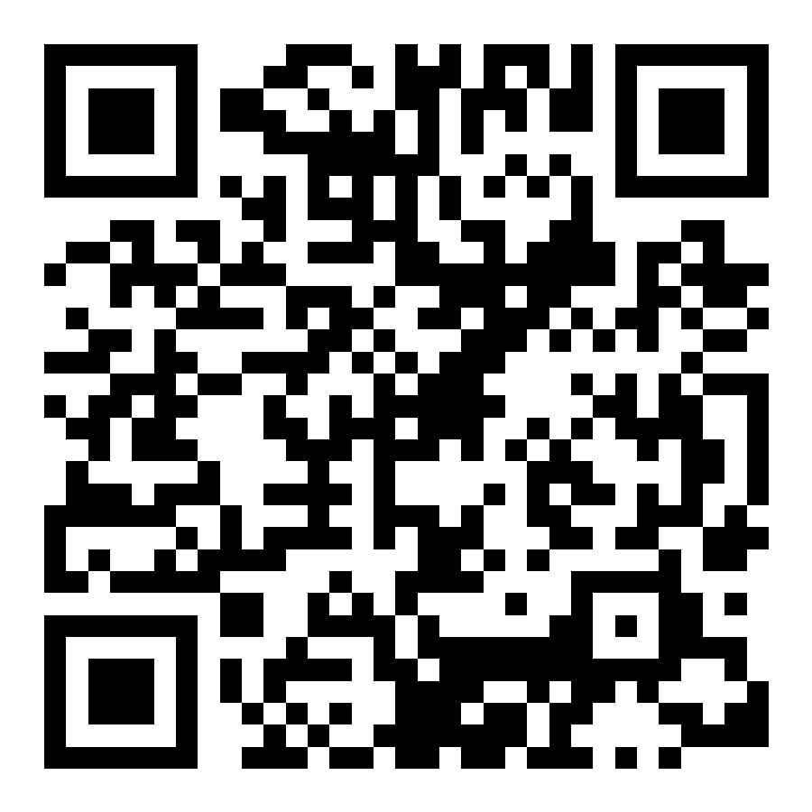

01
↗Cuti
Ajukan tanggal cuti dan pantau persetujuannya.

Scan untuk membuka portal
https://employee-portal.bmc.co.id
Satu portal untuk mengajukan kebutuhan karyawan, memantau status, dan tetap fokus pada pekerjaan Anda.
Ajukan tanggal cuti dan pantau persetujuannya.
Kirim keperluan izin dengan detail yang jelas.
Ajukan perjalanan kerja dan akses QR keberangkatan.